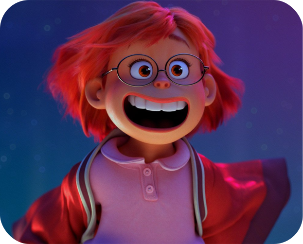
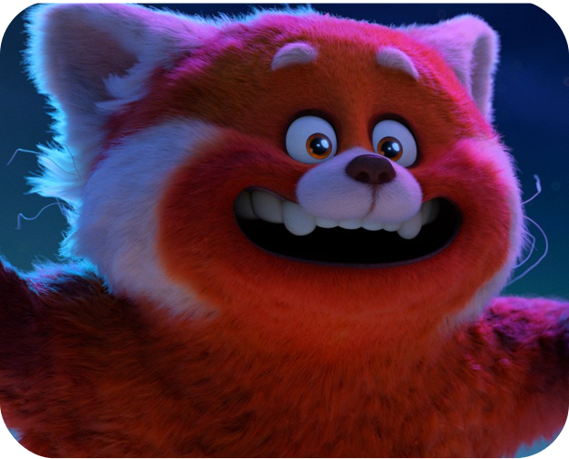
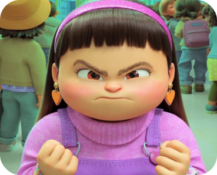
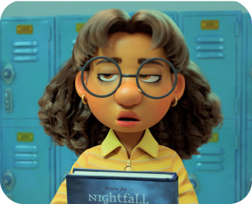

CHARACTERS

Meilin Lee
Exuberant, ambitious, and over-achieving, Chinese-Canadian Meilin Lee is a middle school force of
nature. With her posse of loyal besties, Mei excels at school and obsesses over their fave boy band,
4*Town. At home with her mom, Mei is the dutiful and driven future keeper of the ancestral family
temple. But when ancient magic turns Mei into a giant red panda, a gulf opens up between Mei and her
mom, and forces a reckoning between Mei’s two selves: the obedient daughter and spirited teenager.

Red Panda Mei
Eight feet tall, wild, raging with hormones, fun-loving and destructive, Red
Panda Mei represents Mei at her most emotional, messy, and true self.

Abby Park
Full of fury, tiny Abby is a stick of dynamite; a warrior who will not
hesitate to launch herself at anyone who threatens her besties. Raised by strict parents, Abby plays
the good girl card and follows the rules. But that doesn’t stop her from being unruly and passionate
about boy bands, her friends and saving the earth.

Priya Mangal
Meticulous yet artsy, passionate yet stoic—Priya is a quiet wild card with a
deadpan sense of humor and a good student who follows the rules. But that doesn’t stop her from
obsessing over the boy band, 4*Town.